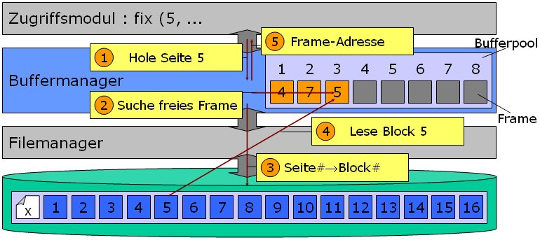

Im Rahmen der zweiten Aufgabe ist die Funktionalität eines Buffermanagers für das Datenbankmanagementsystems hubdb zu implementieren.
Überblick
Der Buffermanager fungiert als Vermittler zwischen dem Dateisystem und den Zugriffsmodulen (z.B. Tupelmanager, Recoverymanager, Indexmanager etc). Alle diese Module arbeiten auf Seitenbasis, d.h., jedes Datentupel in einer Seite wird durch die Adresse der Seite und dem relativen Offset des Tupels innerhalb der Seite identifiziert.
Der Buffermanager garantiert eine logische Sicht in Form von Seiten auf die Datei. Er übersetzt dazu eine Seitenadresse in eine Blockadresse des Filemangers in der physischen Datei. Im Praktikum ist das eine triviale Übersetzung - eine Seite entspricht einem Block. Es gibt also eine statische 1:1 Übersetzung zwischen Seiten und Blöcken. (Kompliziertere Algorithmen wie der Shadowing-Algorithmus speichern jeweils eine logische Seite in zwei Versionen, dadurch benötigt jede Seite zwei Blöcke im physischen File, die alternierend beschrieben werden. Diese alternierende Übersetzung erledigt der Buffermanager und Recoverymanager).
Die Hauptaufgabe des Buffermanager besteht darin, die benötigten Seiten bzw. Blöcke vom Dateisystem in den Hauptspeicherbereich des Datenbanksystems zu transferieren. Dieser Hauptspeicherbereich besteht aus einer Liste von so genannten Frames, die vom Buffermanager verwaltet werden - dabei kann jeder Frame genau eine Seite aufnehmen. Die Liste wird als Bufferpool bezeichnet. Es gibt nur eine Instanz eines
Buffermanagers in hubdb.

Die obige Abbildung soll zur Veranschaulichung der Abläufe im Buffermanager dienen. Wenn eines der Zugriffsmodule eine bestimmte Seite einer Datei benötigt, setzt es eine entsprechende Aufforderung an den Buffermanager ab (1). Dieser sucht dann in der Liste der Frames zunächst nach einem freien Platz. Ist keines der Frames unbelegt, so muss über eine geeignete Verdrängungsstrategie ein freier Platz geschaffen werden (2). Nun erfolgt die Übersetzung der Seitenadresse in die entsprechende Blockadresse (3) und das Laden des Blocks in den freien Eintrag im Bufferpool (4). Nun erhält das aufrufende Modul zugriff auf die Seite im Hauptspeicher.
Funktionalität des Buffermanagers
Der Buffermanager soll folgende Aufgaben realisieren:
- Alle Dateiseiten werden in einem gemeinsamen Speicherbereich (Bufferpool) gehalten, der als eine Art shared virtual memory für alle Datenbankmodule zugänglich ist.
- Jedem Modul wird ein Zugang zu dem Frame gegeben, der die geforderte Seite enthält.
- Ein Modul informiert den Buffermanager, wenn es eine Seite im Frame geändert hat und die Seite geschrieben werden soll. Die tatsächliche Schreiboperation wird vom Buffermanager evtl. zu einem späteren Zeitpunkt (entkoppelt) ausgeführt.
- Einem Modul, das eine Seite angefordert hat, muss garantiert werden, dass diese Seite solange im Buffer bleibt, wie es das Modul erfordert. Ein Modul fordert also eine Seite als im Bufferbereich auf unbestimmte Zeit fixiert an. ( BufferMgr::fix(..) )
- Ein Modul muss jede Seite, die es fixiert hat, auch wieder freigeben (BufferMgr::unfix(..) ).
- Der Bufferbereich kann nicht alle Blöcke der Datenbank gleichzeitig halten. Wenn der Buffermanager aufgefordert wird, eine neue Seite von der Datenbank zu laden, muss er entscheiden, welche Seite bzw. welcher Frame zu überschreiben ist, d.h. welche alte Seite aus dem Buffer zu verdrängen ist. (--> Verdrängungsstrategie)
- Verschiedene Transaktion bzw. Zugriffsmodule können gleichzeitig auf eine Seite lesend zugreifen. Dies ist gleichbedeutend mit mehrfachem Fixieren der Seite im Frame. Erst wenn die letzte Transaktion die Seite freigegeben hat, kann die Seite verdrängt
werden.
- Wie behandelt man den Fall, dass der gesamte Speicherbereich vergeben
wurde ?
Datenstrukturen
Der Bufferpool besteht aus einer Liste von so genannten Buffer Control Blocks (BCB) die unsere Frames darstellen. Jeder BCB enthält ein Objekt der Klasse Page, die wiederum über die aus Aufgabe 1 bekannte Klasse BlockBuffer auf die Blöcke einer Datei zugreifen kann. Der Buffermanager übergibt dem Zugriffsmodul die Frame-Adresse innerhalb eines Buffer Access Control Blocks (BACB). Über diesen kann dann auf die in den Hauptspeicher geladenen Inhalte eines Blocks bzw. einer Seite zugegriffen werden.
Folgende Schnittstellen sind gegeben:
- BufferMgr.h: Die Definition der Klasse des Buffermanagers.
- BufferControlBlock.h: Die Klasse BufferControlBlock (BCB) repräsentiert einen Frame des Bufferpools des Datenbanksystems.
- BufferAccessControlBlock.h: Der Buffer Access Control Block ist die Datenstruktur, über die die überliegenden Module auf die von Buffermanager verwalteten Seiten im Hauptspeicher zugreifen können. Der BACB stellt eine Kapselung eines BCB für die aufrufenden Module dar.
- Page.h:Reprasentiert eine logische Seite einer Datei, die wiederum einem Block in dieser Datei entspricht.
- hubDB.tar.gz: Alle benötigten Module und make-Files zum erstellen des Datenbanksystems (für Solaris). Diese ist für die sog. Vogel-Rechner des Instituts gedacht und soll für die Abgabe verwendet werden.BufferMgr und FileMgr
- hubDB_bufMgr.tar.gz: Alle neuen Module und make-Files zum erstellen des BufferManagers.
Aufgabenstellung
Erstellen Sie für den 17. bzw. 19.05.2005 eine Präsentation (Dauer ca. 10-15 Minuten), in der folgendes kurz erläutert wird:
- Eventuelle Erweiterungen der vorgegebenen Strukturen des Buffermanagers.
- Vorstellung der zu implementierenden Algorithmen (u.a. die gewählte Verdrängungsstrategie). Die Vorstellung kann stichpunktartig, in Pseudo-Code oder mit Hilfe von Flussdiagrammen erfolgen.
- Vorstellen der zu implementierenden Testroutine.
- Sonstige Erweiterungen oder Optimierungen
Die Abgabe der Präsentation (als PowerPoint- oder PDF-Datei) erfolgt per Mail an den jeweiligen Praktikumsbetreuer des Termins, an dem vorgetragen werden soll. Abgabetermin ist einen Tag vor dem Veranstaltungstermin (23.59 Uhr). Es werden nicht alle Gruppen vortragen können und wir werden sehn, wie wir eine geeignete Auswahl treffen können. Auf rege Teilnahme zum Praktikumstermin wird Wert gelegt.
Implementieren Sie dann die geforderte und vorgestellte Funktionalität des Buffermanagers inklusive Verdrängungsstrategie und Testmethode. Die Abgabe erfolgt wie gehabt als gepackte tar-Datei über GOYA.
Abgabe der Implementierung bis zum 05.06.2005
|